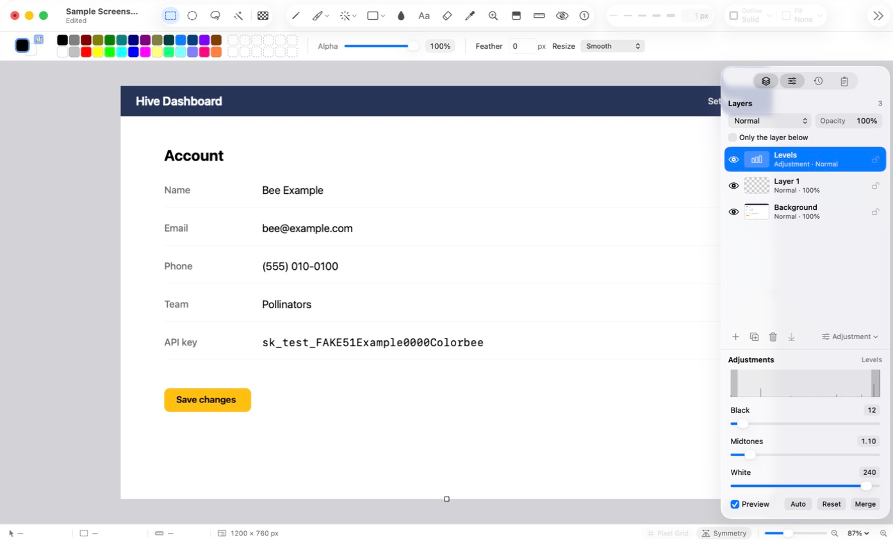

Layers are like sheets of clear film stacked on your image. Draw on one without touching the
others, move it, hide it, or change how it looks.
When to use layers
Annotations you might want to change later, kept off the screenshot itself.
A subject lifted off its background, to edit on its own (Layer ▸ Lift Subject to New Layer).
Color changes you can tweak or undo at any time, with adjustment layers.
You don't need layers for quick jobs. A new image has one layer, and the Layers panel stays hidden until you want it.
The Layers panel

The Layers panel.
Show it with View ▸ Layers (⌘L) or the Layers button at the right of the toolbar.
Click a layer to make it active. Painting, effects and adjustments work on the active layer. Redaction works on every layer, and Crop, Straighten, Rotate and resizing the whole image change every layer.
Double-click to rename it. Drag to change the order.
The eye hides or shows a layer. The padlock locks it, so it can't be painted on, moved, merged into or deleted. Commands that change the whole image, such as Crop, Rotate and Resize, still change it. A locked layer can still be hidden and reordered.
Blend mode and Opacity, at the top of the panel, set how the active layer mixes with the ones below.
The buttons along the bottom add, duplicate, delete and merge down.
Adding and combining
Command
What it does
New Layer (⇧⌘N)
A clear layer above the active one.
Duplicate Layer (⌘J)
A copy of the active layer, just above it.
Delete Layer (⌘⌫)
Removes the active layer.
Merge Down (⇧⌘E)
Combines the active layer into the one below it.
Merge Visible (⌥⇧⌘E)
Combines every visible layer into one. Hidden layers stay.
Flatten
Combines all visible layers into one, and drops hidden layers.
All of these are in the Layer menu. Merging keeps how the picture looks.
Adjustment layers
An adjustment layer changes how the layers below it look, without changing their pixels. You can change its settings, hide it or delete it at any time.
Choose Layer ▸ New Adjustment Layer, or Adjustment ▾ in the Layers panel, and pick one: Hue/Saturation, Adjust Photo, Levels, Curves and more.
Its settings open in the Adjustments panel. Change them and watch the image update.
To change them later, click the adjustment layer and open View ▸ Adjustments.
Change just one layer
Normally an adjustment changes everything below it. To change only the layer right under it, such as a lifted subject but not its background, select the adjustment layer and turn on Only the layer below in the Layers panel.
The adjustment is shown with an arrow and "Layer below only".
You can stack several of these on one layer, and they apply in order.
If the layer under it is an ordinary adjustment layer, or there's nothing under it, it says "Layer below only: none" and changes nothing.
These adjustments stay with their layer: a new layer added while it's selected goes above them, Merge Down keeps the look by merging them in, and Delete Layer deletes them too.
Merge Adjustment
Layer ▸ Merge Adjustment, or Merge in the Adjustments panel, makes the adjustment permanent: it combines the adjustment and every visible layer below it into one pixel layer, looking just the same. Layers above it aren't touched. With Only the layer below, it goes into that one layer instead.
Undo for one layer
Edit ▸ Undo on Active Layer (⌥⌘Z) undoes the last change on the active layer only, leaving later changes on other layers in place.
Layer ▸ Revert Layer puts the active layer back as it was at the last save.
Saving a layered image
Once an image has more than one layer, or an adjustment layer, it saves as a Colorbee project (.colorproj). A project keeps every layer, its name, blend mode, opacity and visibility, and the adjustment layers.
If you opened a PNG or JPEG and added layers, the original file is left as it was, and the next save asks where to put the project. For a flat copy to share, use File ▸ Export…: it combines the visible layers and leaves your document as it is.